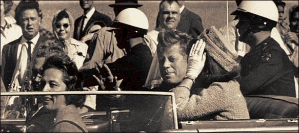

Monday, November the 22nd, 2004
back to: title, date or indexes

Today being the forty-first anniversary of the assassination of Potus John Fitzgerald Kennedy, it is appropriate to pose some of the questions about that day in Dallas which remain unanswered. Perhaps they are unanswerable.
Did the citizens of Dallas refer to the grassy knoll as “the grassy knoll” before it became known as The Grassy Knoll, or did they call it “a grassy knoll” or “that grassy knoll”, or even “that patch of grass over there in Dealey Plaza”? Similarly, was the white picket fence known as “that white picket fence” or just “that fence”?
Did his family, friends and acquaintances address Umbrella Man as “umbrella man” prior to 22nd November 1963? The same question can be asked of Badge Man, and indeed of Marymoon Man, or, as some commentators on the assassination have it, Mary Moonman, or Moorman.
We know that future Potus Richard Milhous Nixon flew out of Dallas, suspiciously, on the morning of the assassination. Was he accompanied by his dog Checkers, or had Checkers already passed to The Other Side by then?
Elderly dressmaker Abraham Zapruder famously shot the Zapruder Footage on that sunny November day in Dallas. Who decided to dub it “The Zapruder Footage” as opposed to, say, “The Zapruder Film” or “Zapruder's cinefilm”?
The cinema in which Lee Harvey Oswald was apprehended was showing the film War Is Hell starring Van Heflin at the time. Was Mr Heflin part of the conspiracy, if indeed there was a conspiracy?
Brain guru Tony Buzan : was he in the Texas Schoolbook Depository?
A question with wider implications relates to the practice of assassin nomenclature. When was it decided, and by whom, that the assassins of Potuses (or Potae) should invariably be given their full three names, as in Lee Harvey Oswald and John Wilkes Booth? Why is this also accorded to the assassins of whining Liverpudlian pop singers (Mark David Chapman) but not to unsuccessful Potus assassins (John Hinckley) unless they are members of the Manson cult (Lynette “Squeaky” Fromme)? And is Sirhan Sirhan's middle name also Sirhan?
Hooting Yard on the Air, November the 24th, 2004 : “JFK : The Unanswered Questions” (starts around 00:09)